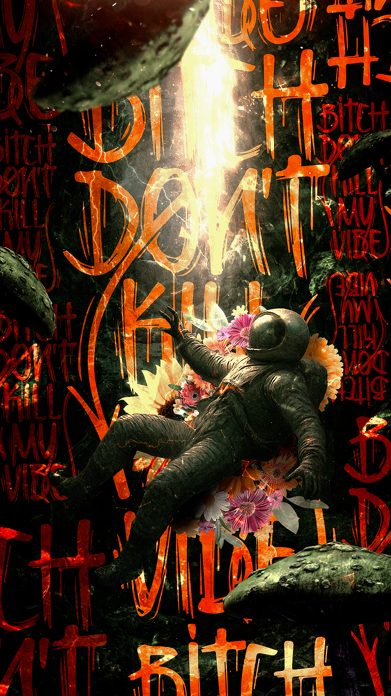
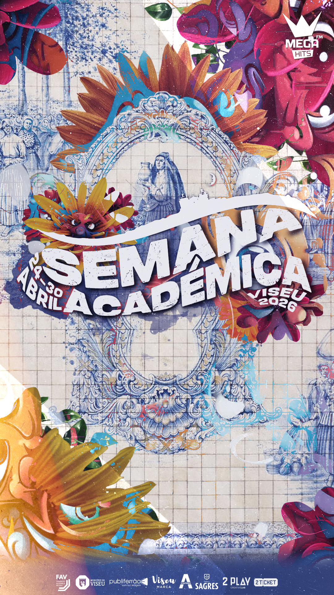
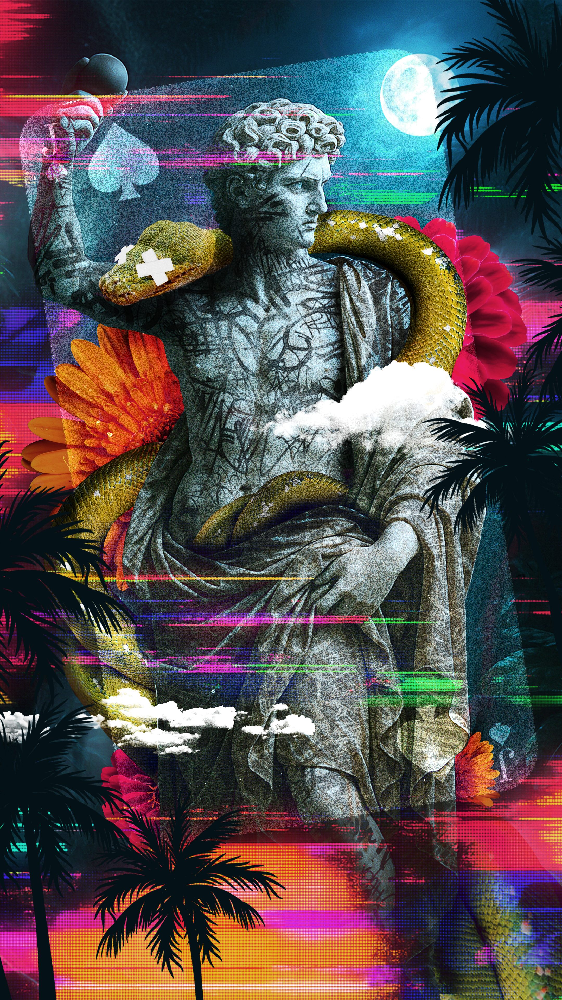
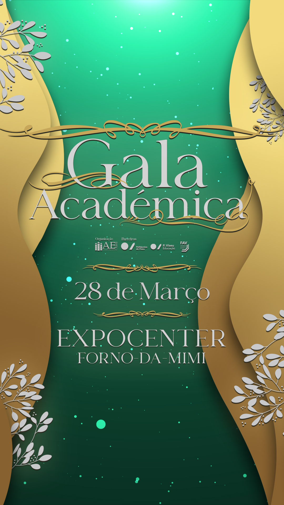
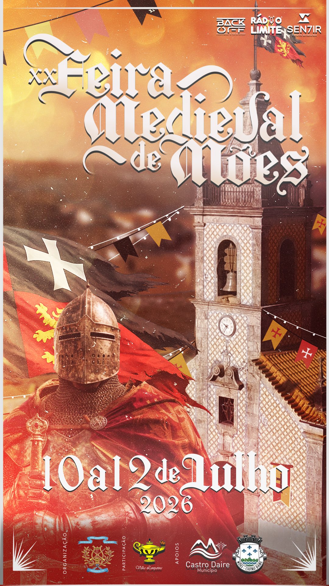
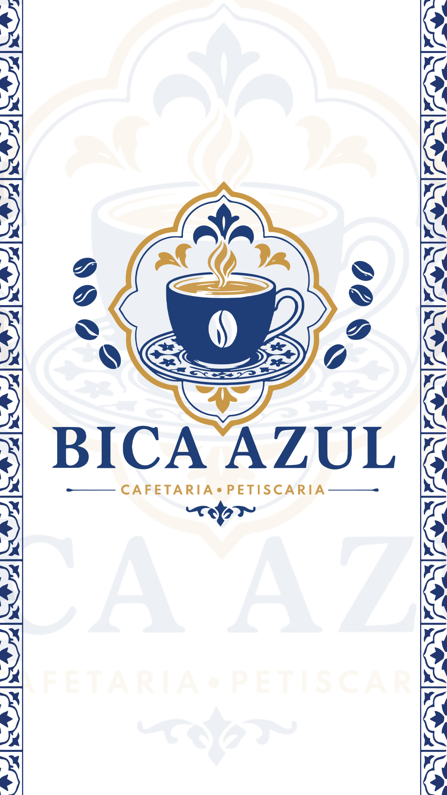

Design Gráfico & Direção de Arte

Identidade visual, editorial e ilustração — a contar histórias através da cor e da forma.
Scroll
Sobre mim
Design com
personalidade.
Sou o Diogo, designer gráfico focado em criar identidades visuais fortes, coloridas e memoráveis. Trabalho entre o digital e o impresso, sempre à procura da ideia certa antes da estética certa. Substitui este texto pela tua própria apresentação.
—Branding
—Editorial
—Identidade Visual
—Ilustração
—Packaging
—Branding
—Editorial
—Identidade Visual
—Ilustração
—Packaging
Trabalhos
selecionados

Marca A
Branding
Revista B
Editorial
Festival C
IlustraçãoProduto D
Packaging
Marca E
Direção de ArteProjeto F
UI Design
Marca G
Branding
Revista H
EditorialExplorar tudo


Vamos criar
algo juntos?
Disponível para novos projetos e colaborações.
Fala comigo →